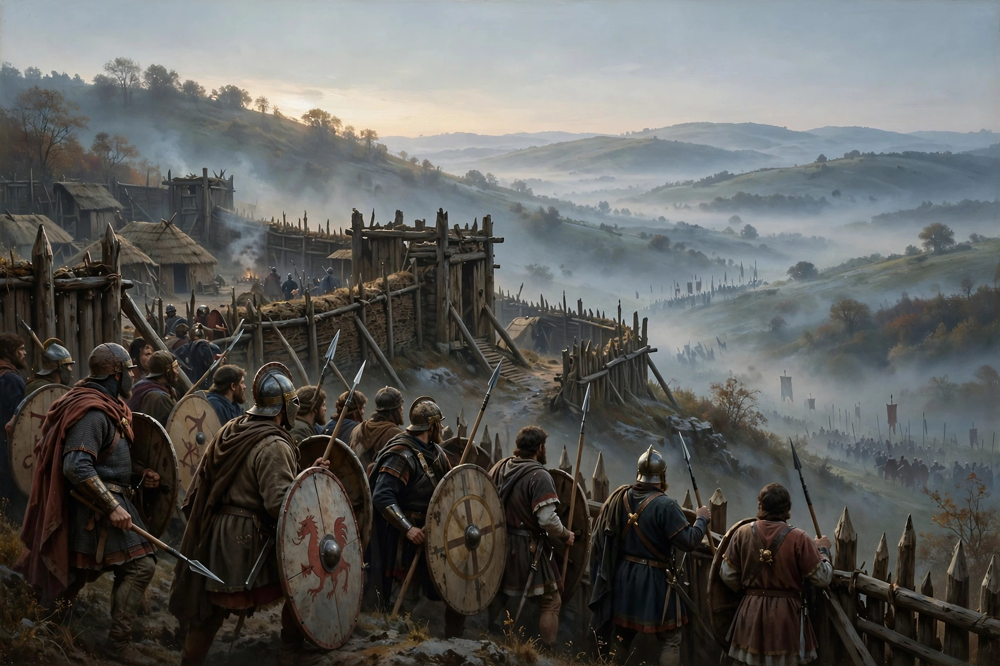

The Battle of Badon, also known as the Battle of Mons Badonicus, was a battle purportedly fought between Britons and Anglo-Saxons in Post-Roman Britain in the late 5th or early 6th century. It was credited as a major victory for the Britons, stopping Anglo-Saxon expansion for a generation.

Gildas, writing within living memory, mentions the siege of Mount Badon. Bede and the Annales Cambriae date it variously; later Welsh tradition associates it with King Arthur, who is said to have carried a cross or image of Mary. The location is debated — Bath and various hillforts have been proposed.